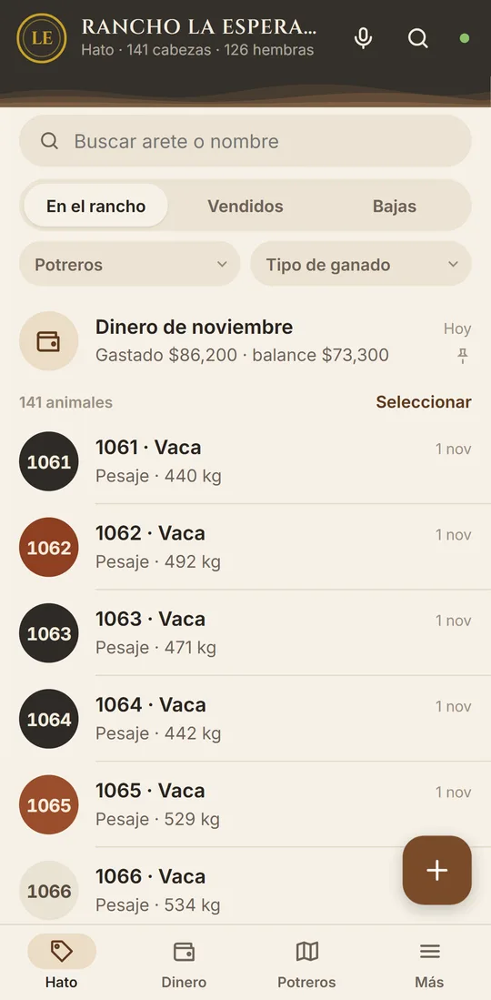
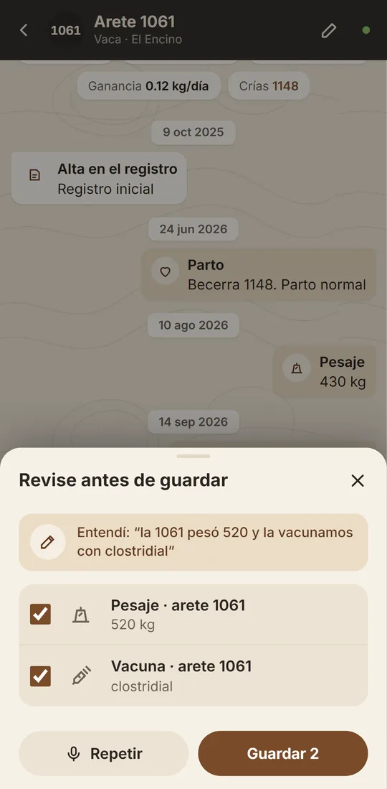
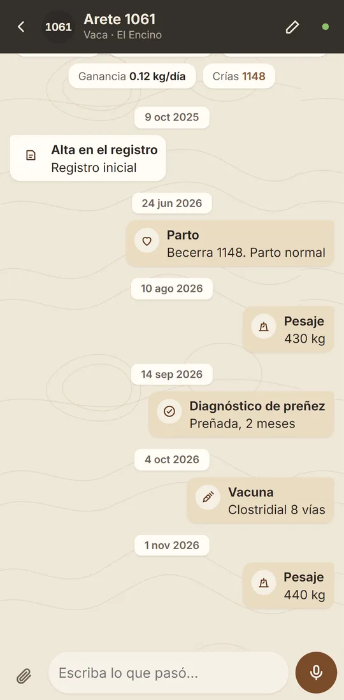
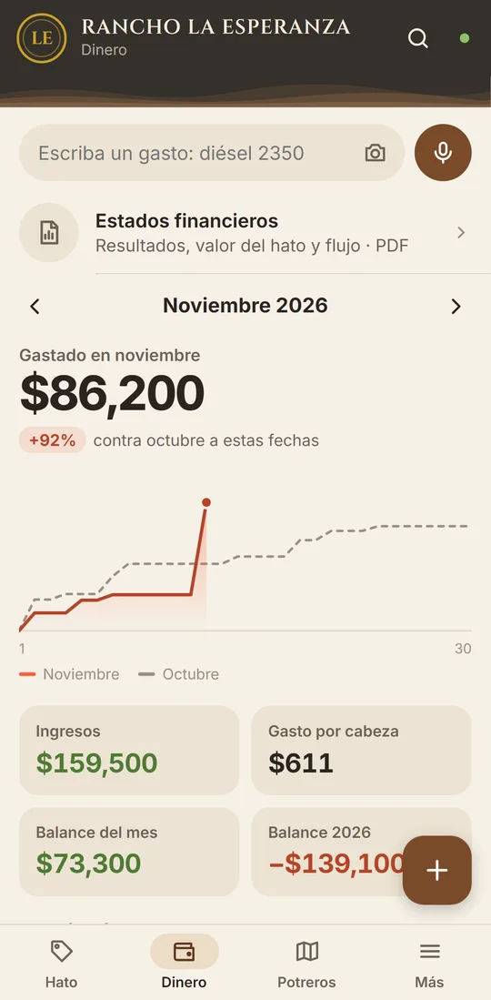
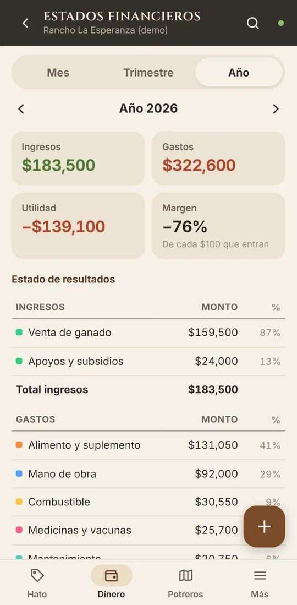

El control de su rancho, en su celular.
Cada animal con su historia, cada gasto y cada venta, y cómo va el rancho mes con mes. Se le dicta por voz o se le toma foto al ticket, y funciona aunque no haya señal.
- Android y iPhone
- Sin señal en el monte
- Sus vaqueros no ven su dinero

Tan fácil como mandar un mensaje.
Nada de capturar formularios largos al final del día. Lo que pasa en el corral se anota en el momento, con la voz o con la cámara.



Todo lo del rancho, en un solo lugar.
- Registro de ganadoArete, raza, color, pesos, vacunas, tratamientos, partos, preñez, destetes, compras, ventas y bajas.
- Potreros y aguaCuántos animales hay en cada potrero, cuáles están sin agua, y mover ganado por lote o uno por uno.
- Gastos e ingresos20 categorías del rancho (alimento, sal, medicinas, sueldos, diésel, cercos…) y las que usted cree.
- Estados financierosResultados por mes, trimestre o año, valor estimado del hato y flujo de efectivo. Se descarga en PDF.
- Voz y foto del ticketDicte lo que pasó o tómele foto al ticket: monto, proveedor y fecha se llenan solos.
- Funciona sin señalSe guarda en el celular y se sube solo cuando regresa la señal. No se pierde nada.
- Historial de cambiosQuién anotó, cambió o borró cada cosa y cuándo. Nadie lo puede alterar.
- Respaldo diarioSu información se respalda todos los días y solo la ve la gente de su rancho.
Cada quien ve lo que le toca.
- El patrónVe todo: ganado, gastos, sueldos, ventas, estados financieros e historial.
- El encargadoLleva el ganado y el dinero del día a día.
- Los vaquerosAnotan pesajes, vacunas, partos y movimientos. No ven el dinero ni los precios, y no pueden borrar.

Reporte gratis de su rancho por satélite.
Le decimos cómo está el pasto y la humedad de sus potreros, visto desde el satélite, sin que usted capture nada.
- Mándenos por WhatsApp la ubicación de su rancho.
- Revisamos las imágenes de satélite más recientes.
- Le regresamos su reporte en unos días.
Un pago para arrancar y una mensualidad.
Sin letras chiquitas. La inversión del equipo (aretes, lectores, básculas) no va incluida; la app funciona sin ellos.
1. Pago inicial
- Damos de alta su rancho, potreros y usuarios
- Capturamos su ganado: nos pasa su libreta, Excel o fotos
- Le enseñamos a usarla a usted y a sus vaqueros
- Incluye el primer mes
2. Mensualidad
- Usuarios sin límite
- Respaldo diario de su información
- Soporte directo por WhatsApp
- Los ajustes que vaya pidiendo
O el año completo: $7,500 + $9,500 = $17,000. Se ahorra 2 mensualidades.
En una semana lo tiene funcionando.
- PlaticamosNos cuenta cómo trabaja su rancho y le damos acceso a un rancho de prueba para que la conozca.
- Cargamos su ganadoNos pasa lo que tenga (libreta, Excel o fotos) y nosotros lo subimos con sus potreros y usuarios.
- A trabajarLe enseñamos a usted y a sus vaqueros, y la vamos ajustando a como usted trabaja.
Lo que más nos preguntan.
¿Funciona donde no hay señal?
Sí. Todo se guarda en el celular y se sube solo cuando hay señal otra vez. Aunque el celular se apague o se cierre la app, lo anotado no se pierde.
¿Funciona en Android y en iPhone?
Sí, en los dos. Se instala desde el navegador en un minuto y queda con su ícono en la pantalla, como cualquier app.
¿Sirve para la trazabilidad del SINIIGA?
Lleva la historia completa de cada animal por su número de arete (puede ser el del SINIIGA): nacimiento, madre, pesos, vacunas, movimientos, compra y venta. No sustituye el registro oficial ante SINIIGA ni la guía de movilización, pero tiene todo ordenado para cuando se lo pidan.
¿Mis vaqueros van a ver mi dinero?
No. Los vaqueros solo ven y anotan lo del ganado. Los gastos, ingresos, precios de venta y el historial solo los ven el patrón y el encargado.
¿Quién más ve mi información?
Solo la gente de su rancho. Cada rancho está separado y su información se respalda todos los días. Al terminar el servicio le entregamos sus datos en Excel.
¿Cuántas personas la pueden usar?
Las que usted necesite: patrón, encargados y vaqueros, sin costo extra por usuario.
¿Y si quiero algo que no tiene?
Nos dice y lo vemos. Los ajustes chicos van incluidos en la mensualidad; si es algo más grande, se lo cotizamos antes.
Su ganado y su dinero, en orden.
Escríbanos y le damos acceso a un rancho de prueba para que la conozca, sin compromiso.